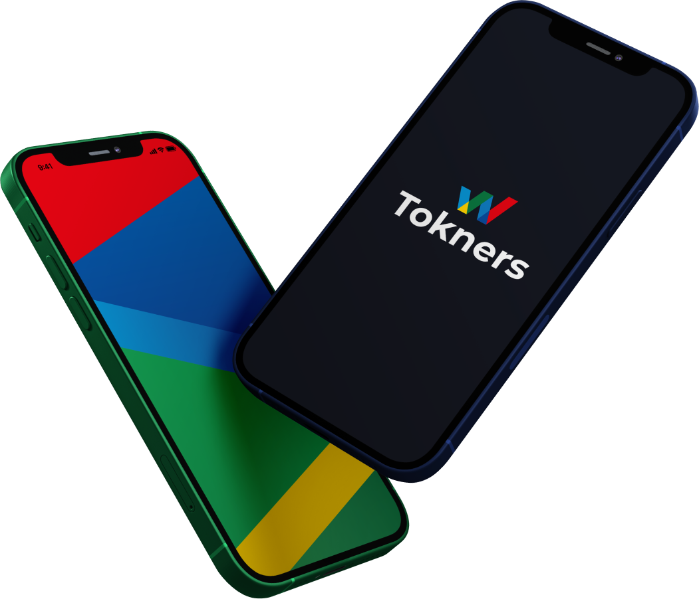

For Creators
Creators can gain independence through a decentralised digital currency system that is dependent on growing and engaging with the community and also their star power. They own 10-15% of the total value of the tokens minted.
Ai Token we are
We are creating social media 3.0 with influencers, celebrities and creators being able to launch their own digital currency by simply creating a profile with media content posted as Non fungible Tokens that can be owned and traded on the Tknrs network

Creators can gain independence through a decentralised digital currency system that is dependent on growing and engaging with the community and also their star power. They own 10-15% of the total value of the tokens minted.
Holding social tokens allows the individual to gain access to benefits including unreleased content, private communities, direct access to celebrity, early- access to tickets and more as well as the ability to trade with other communities in order to gain access to more creator content with early token buyers being the biggest winners as the value of the token increases with more buyers.

We would only launch tokens with the express permission of the creators.
There are several thousand celebrities and creators on twitter, tiktok, Instagram and YouTube with followings in the millions who we would be actively engaging before we go viral.
We would get them on our platform and they would see the opportunity to create a fan driven digital economy where their digital content can be traded as NFTs and their most loyal fans can have the monetary value of their creator's currency increase significantly as they promote their digital currency across their channels while our native token holders benefit from the Weentar popularity.
01Team set-up
01Launch of informational website
01Presale and exchange listings
02Blockchain development and launch
03Launch of our MVP
04Influencer agency partnerships
05Marketing and promotion
01Celebrity, Creator and Influencer partnerships
02Expansion of creator communities on our platform
03More Marketing and promotion
01Mainstream partnerships
02500 active creator communities
032Million active community members
04More Marketing and promotion
 Tokner is coming
Tokner is comingCryptocurrency adoption is at less than 1% of the global world population with some countries and entities actively fighting against its mass adoption and the smartest developers and nerds holding the fort.
Bitcoin was the first, and it has since grown to thousands of tokens launched all aiming to fix one problem or the other with some quite simply FOMOing the moment. Our goal is to bring mass adoption to the cryptocurrency space by dumbing it down. How far down? So down that even a celebrity can explain it in simple words to their followers and have them download an app, buy into the social currency of their favourite person and watch their investment as is with other crypto currency project.
We are trying to do to this space what investment apps did for the "nonexistent retail investors". We are gamefying digital currency, bringing in popular faces instead of hard to understand projects to make it the norm and inadvertently being the "gateway drug" for a lot of people to finally give this space a real look.
A new digital economy is coming. People would be just as powerful as countries and creators would be paid beyond the peanuts that conventional social media platforms can offer.
There would be new markets and advertisers with little to offer would not find home there. Like Kanye said,
""Personalities would become the new currency, and services would be built on top of them".
Well, Kanye didn't exactly say that, but it sounds like something we hope he would say.
Currency is digital, it has been that way for a while now, but this time there would be no dead presidents on the money, there would people like you on the money, and you would own it because it would make the most sense in the world.

An introduction to the Tokners platform and its social media 3.0 concept. A text transcript should be provided alongside the video.
Video transcript: Introduction to the Tokners platform and its social media 3.0 concept. Replace this placeholder with the complete spoken content of the video.
Audio introduction to the Tokners platform. A text transcript is available below.
Audio transcript: Introduction to the Tokners platform and its social media 3.0 concept. Replace this placeholder with the complete spoken content of the audio.

01/04/2021 - 14/04/2021
1 BNB = 100000 WNTR
Soft cap: 5000 BNB
Hard cap: 10000 BNB
15/04/2021 - 30/04/2021
1 BNB = 100000 WNTR
Soft cap: 5000 BNB
Hard cap: 10000 BNB
01/05/2021 - 16/05/2021
1 BNB = 100000 WNTR
Soft cap: 5000 BNB
Hard cap: 10000 BNB
First Connect your Metamask or TrustWallet to the "Connect Wallet" on the Homepage.
Then send minimum of 0.1 BNB or maximum of 10 BNB to the Presale wallet
Then after you will received your $WNTR to your address within 24hours.